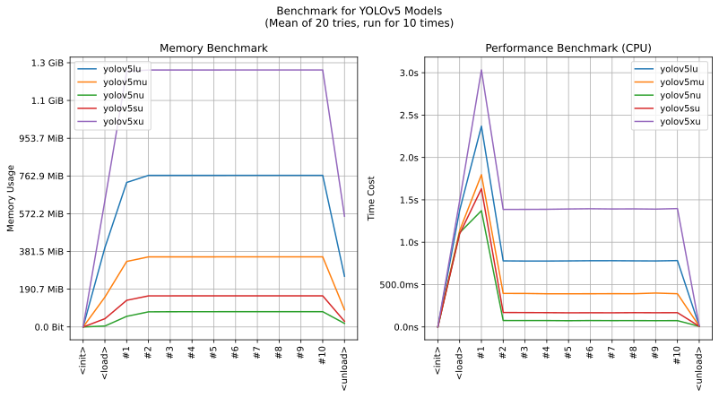
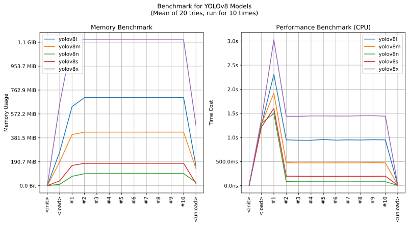
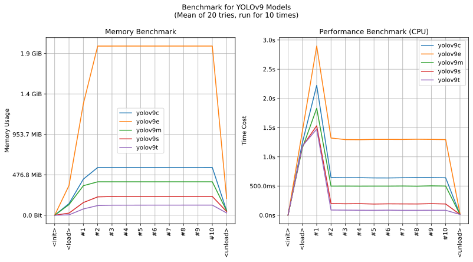
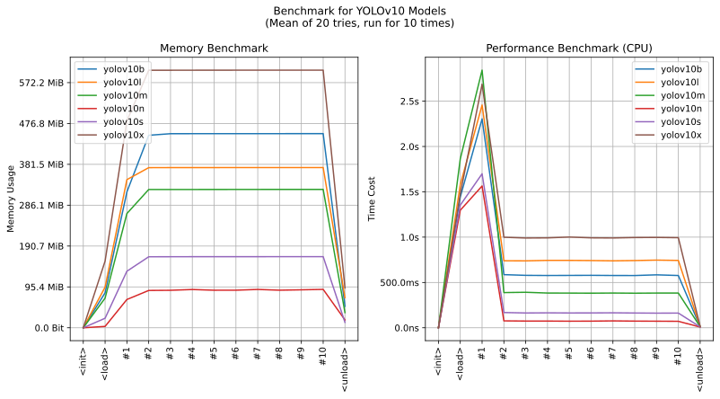
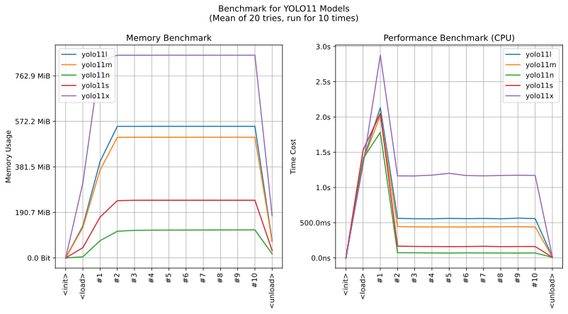
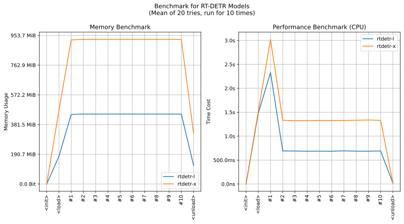

realutils.detect.yolo
- Overview:
Detect objects in generic images, using the official pretrained models.
Models are hosted on deepghs/yolos.

This is an overall benchmark of all the censor detect models:
Overview of YOLOv5 Models
Overview of YOLOv8 Models
Overview of YOLOv9 Models
Overview of YOLOv10 Models
Overview of YOLO11 Models
Overview of RT-DETR Models

detect_by_yolo
- realutils.detect.yolo.detect_by_yolo(image: str | PathLike | bytes | bytearray | BinaryIO | Image, model_name: str = 'yolo11s', conf_threshold: float = 0.3, iou_threshold: float = 0.7, **kwargs) List[Tuple[Tuple[int, int, int, int], str, float]][source]
Detect object in generic images.
- Parameters:
image (ImageTyping) – The input image to be analyzed. Can be a file path, URL, or image data.
model_name (str) – Optional custom model name. Default is yolo11s.
conf_threshold (float) – The confidence threshold for detections. Only detections with confidence above this value will be returned. Default is 0.3.
iou_threshold (float) – The Intersection over Union (IoU) threshold for non-maximum suppression. Detections with IoU above this value will be merged. Default is 0.7.
- Returns:
A list of tuples, each containing: - A tuple of four integers (x0, y0, x1, y1) representing the bounding box - A string indicating the type of detection (e.g. ‘person’, ‘cat’, etc) - A float representing the confidence score of the detection
- Return type:
List[Tuple[Tuple[int, int, int, int], str, float]]
- Raises:
ValueError – If an invalid level is provided.
RuntimeError – If the model fails to load or process the image.
- Exmple:
>>> from realutils.detect import detect_by_yolo >>> >>> detect_by_yolo('yolo/unsplash_aJafJ0sLo6o.jpg') [((450, 317, 567, 599), 'person', 0.9004617929458618)] >>> detect_by_yolo('yolo/unsplash_n4qQGOBgI7U.jpg') [((73, 101, 365, 409), 'vase', 0.9098997116088867), ((441, 215, 659, 428), 'vase', 0.622944176197052), ((5, 1, 428, 377), 'potted plant', 0.5178268551826477)] >>> detect_by_yolo('yolo/unsplash_vUNQaTtZeOo.jpg') [((381, 103, 676, 448), 'bird', 0.9061452150344849)] >>> detect_by_yolo('yolo/unsplash_YZOqXWF_9pk.jpg') [((315, 100, 690, 532), 'horse', 0.9453459978103638), ((198, 181, 291, 256), 'horse', 0.917123556137085), ((145, 173, 180, 249), 'horse', 0.7972317337989807), ((660, 138, 701, 170), 'horse', 0.4843617379665375)]